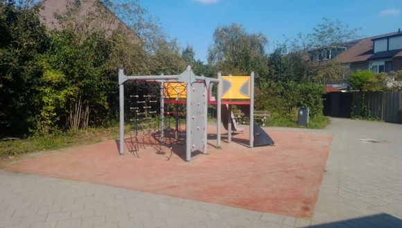

Playtime Bliss for Kids
In Vondelkwartier, we prioritize the well-being and fun of our youngest residents. Kids here have access to several designated play areas that cater to their different needs and interests. The playground at the local school offers a space for structured play and social interaction during school breaks. It's not just a place for fun but also a hub for building friendships and enjoying active playtime with classmates. Nestled among the buildings, Hof van Eden Playground is not just a place for play; it's also a community gathering spot for neighborhood events. From summer picnics to holiday celebrations, this is where our community comes together to create lasting memories.
Endless Outdoor Adventures
Located next to De Dolfijn, the Trekpleister Playground provides a large and well-equipped play area for kids to explore and have a blast. It's a haven for adventure and imaginative play, ensuring that every child's playtime is filled with excitement. In addition to these playgrounds, children in Vondelkwartier can make use of the open grass fields in front of their houses for unstructured play. These open spaces encourage creativity, exploration, and a connection with the great outdoors. With multiple play areas to choose from, Vondelkwartier ensures that children have plenty of options for outdoor activities. It's a place where kids can grow, learn, and make memories while enjoying the fresh air and the joy of playtime.